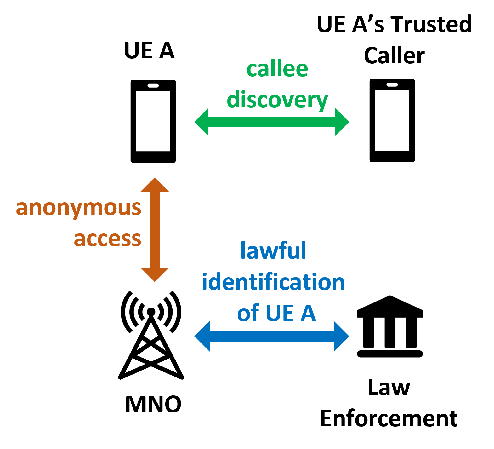

Ongoing Projects
CAREER: Foundations of Operational Resilience and Secure Communication for Networked Real-Time Systems [Project Page]
When multiple real-time systems form a network to conduct joint missions, such as vehicle platooning and industrial robot coordination, safety and timeliness are a prime concern. This project develops the RESONET architecture to enable multiple real-time systems to perform coordinated operations with strong fault tolerance and real-time guarantees.
This project is supported by NSF Award #2442382. Xiao's Role: Sole PI.
A Novel Architecture for Secure and Adaptive Spectrum Management Enabling Registration-Free Federal Users
The vision of dynamic spectrum sharing often compromises the operational efficiency and privacy of federal incumbents. This project develops a registration-free spectrum access management architecture that enables incumbents to use radio spectrum while preserving both their agility and operational privacy.
This project is supported by NSF Award #2433905 under a collaborative NewSpectrum project. Xiao's Role: University of Kentucky PI.

An Anti-tracking and Robocall-free Architecture for Next-G Mobile Networks [Project Page]
Mobile networks are essential to modern life, but facing serious privacy concerns as MNOs and third parties can track users's activity. This project develops an anonymous mobile access architecture to disable tracking and profiling using anonymous identifiers. It supports essential network functions and lawful interception while giving users control over their privacy.
This project is supported by NSF Award #2247561 under a collaborative SaTC project. Xiao's Role: University of Kentucky PI.
Decentralized Federated Learning in Sporadically Connected Wireless Networks [Project Page]
If the central parameter server is not available, how to perform federate learning reliably? This project aims to develop the communication, networking, and consensus-driven learning paradigms for autonomous agents to run decentralized federated learning in a sporadically connected, potentially adversarial, network environment.
This project is supported by ONR, subawarded through Virginia Tech. Xiao's Role: Co-PI.
Previous Projects

Understanding Blockchain Consensus and Security [Summary]
Consensus protocol underpins the security of a blockchain system. It enables decentralized, mutually distrustful parties to agree on a unified transaction history without the help of a central authority. However, the idealism behind such consensus-based security is complicated by the less-decentralized reality of other system layers.

Trustworthy Knowledge Aggregation in an Untrusted World [Summary]
In the data-driven economy, both data owners (e.g., you and me) and data consumers (e.g., an app) have attributed great importance to the security and trustworthiness of data. In this direction, we take advantage of blockchain smart contract, trust computing, and other crypto techniques to build secure and privacy-respecting applications in an evolving adversarial landscape.

Automotive Network & Cyber-physical Security [Summary]
Modern vehicles rely on a fleet of electronic control units (ECUs), connected through automotive communication networks, for real-time subsystem control. These networks, however, are heavily criticized for little-to-none built-in security and susceptibility to intrusions and manipulation. In this research, we explore both prevention methods---including link-layer cryptographic protocols---and machine learning-based detection methods.

Blockchain for Wireless Networks & Spectrum Management [Summary]
Spectrum is the single most important resource for wireless communication and sensing. This research aims to provide secure and efficient Dynamic Spectrum Sharing (DSS) mechanisms with minimal trust assumptions by leveraging blockchain and distributed ledger technology.